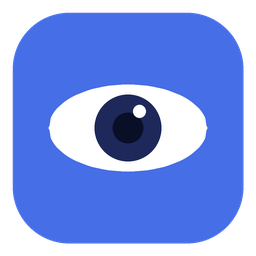

Wakey WakeyGetting sleepy. Click the eye.
A small, free menu bar app. One click stops your Mac sleeping, dimming or locking — handy for downloads, presentations, long builds and anything else you don't want interrupted. Click again to let it rest.
Download for MacLeft-click the eye in your menu bar to keep your Mac awake. Left-click again to turn it off.
Right-click for 5 minutes, half an hour, 5 hours, or indefinitely. The menu shows how long is left.
Keep the screen lit, or let it dim and lock while the Mac itself stays awake for background work.
No Dock icon, no window. Launch at login, activate at launch, and forget it's there.
Wakey Wakey uses the same power-management request that macOS apps use when playing a video or running a long task, so it's safe, needs no special permissions, and is always released when you turn it off or quit. The code is open for you to check.